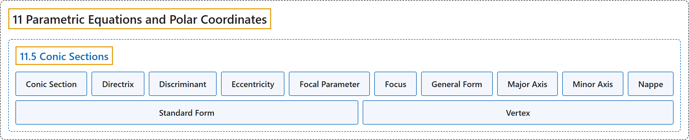

11.5 Conic Sections
Classification

Glossary
| Term | Definition | 中文翻译 | Source |
|---|---|---|---|
| 11 Parametric Equations and Polar Coordinates 参数方程与极坐标 |
(No definition) | （无定义） | Strang & Herman, 2016b, chapter 7 |
| 11.5 Conic Sections 圆锥曲线 |
(No definition) | （无定义） | Strang & Herman, 2016b, section 7.5 |
| Conic Section 圆锥曲线 |
"a conic section is any curve formed by the intersection of a plane with a cone of two nappes" | 圆锥曲线是由平面与两叶圆锥相交所形成的任一曲线 | Strang & Herman, 2016b, chapter 7 Key Terms |
| Directrix 准线 |
"a directrix (plural: directrices) is a line used to construct and define a conic section; a parabola has one directrix; ellipses and hyperbolas have two" | 准线（复数：directrices）是用来构造和定义圆锥曲线的直线；抛物线有一条准线；椭圆和双曲线有两条 | Strang & Herman, 2016b, chapter 7 Key Terms |
| Discriminant 判别式 |
"the value \(4AC-B^{2},\) which is used to identify a conic when the equation contains a term involving \(xy,\) is called a discriminant" | 值 \(4AC-B^{2},\) 在方程含 \(xy,\) 项时用来判别圆锥曲线，称为判别式 | Strang & Herman, 2016b, chapter 7 Key Terms |
| Eccentricity 离心率 |
"the eccentricity is defined as the distance from any point on the conic section to its focus divided by the perpendicular distance from that point to the nearest directrix" | 离心率定义为圆锥曲线上任一点到焦点的距离除以该点到最近准线的垂直距离 | Strang & Herman, 2016b, chapter 7 Key Terms |
| Focal Parameter 焦参数 |
"the focal parameter is the distance from a focus of a conic section to the nearest directrix" | 焦参数是圆锥曲线的焦点到最近准线的距离 | Strang & Herman, 2016b, chapter 7 Key Terms |
| Focus 焦点 |
"a focus (plural: foci) is a point used to construct and define a conic section; a parabola has one focus; an ellipse and a hyperbola have two" | 焦点（复数：foci）是用来构造和定义圆锥曲线的点；抛物线有一个焦点；椭圆和双曲线有两个 | Strang & Herman, 2016b, chapter 7 Key Terms |
| General Form 一般式 |
"an equation of a conic section written as a general second-degree equation" | 写成一般二次方程的圆锥曲线方程 | Strang & Herman, 2016b, chapter 7 Key Terms |
| Major Axis 长轴 |
"the major axis of a conic section passes through the vertex in the case of a parabola or through the two vertices in the case of an ellipse or hyperbola; it is also an axis of symmetry of the conic; also called the transverse axis" | 圆锥曲线的长轴在抛物线情形下经过顶点，在椭圆或双曲线情形下经过两个顶点；它也是圆锥曲线的对称轴；也称为横轴 | Strang & Herman, 2016b, chapter 7 Key Terms |
| Minor Axis 短轴 |
"the minor axis is perpendicular to the major axis and intersects the major axis at the center of the conic, or at the vertex in the case of the parabola; also called the conjugate axis" | 短轴垂直于长轴，并在圆锥曲线的中心（抛物线情形下在顶点）与长轴相交；也称为共轭轴 | Strang & Herman, 2016b, chapter 7 Key Terms |
| Nappe 叶 |
"a nappe is one half of a double cone" | 叶是双圆锥的一半 | Strang & Herman, 2016b, chapter 7 Key Terms |
| Standard Form 标准式 |
"an equation of a conic section showing its properties, such as location of the vertex or lengths of major and minor axes" | 表明其性质（如顶点位置或长短轴长度）的圆锥曲线方程 | Strang & Herman, 2016b, chapter 7 Key Terms |
| Vertex 顶点 |
"a vertex is an extreme point on a conic section; a parabola has one vertex at its turning point. An ellipse has two vertices, one at each end of the major axis; a hyperbola has two vertices, one at the turning point of each branch" | 顶点是圆锥曲线上的极端点；抛物线在其转折点处有一个顶点。椭圆有两个顶点，长轴两端各一个；双曲线有两个顶点，每支的转折点各一个 | Strang & Herman, 2016b, chapter 7 Key Terms |
References
Strang, G., & Herman, E. (2016b). Calculus volume 2. OpenStax. Retrieved October 29, 2026, from https://openstax.org/details/books/calculus-volume-2